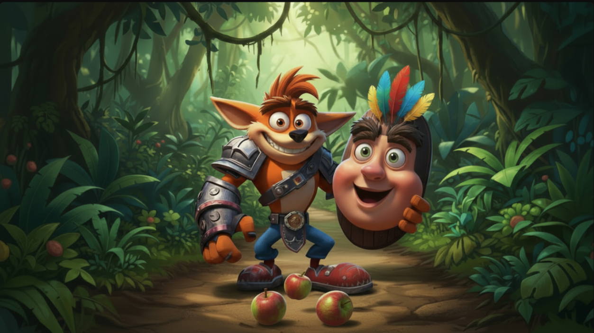
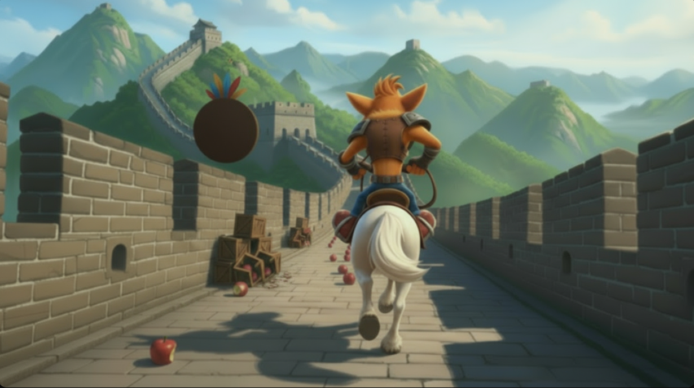
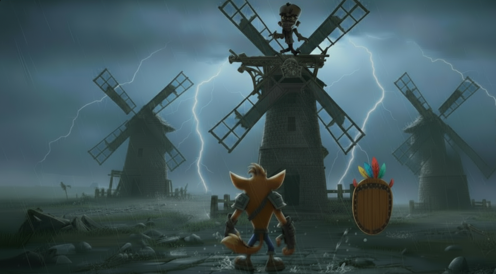

🗺️ Livelli
Esplora i 3 emozionanti livelli del gioco!
The Mulinex Revenge
🌴 Sentiero Giungla

Il primo livello!
Don Bandicoot, immerso nella fitta giungla, cerca di recuperare una gemma, difesa dagli Elementals, che gli permette di accedere al livello successivo!
Don cerca anche di salvare la sua fidanzata dalle mani del dottor Mulinex, senza però riuscirci, e venendo quindi teletrasportato in una nuova dimensione.
⚠️ Difficoltà: Facile 📦 Casse: 45 💎 Gemme: 1
💡: Sconfiggi il Boss degli Elementals per ottenere la Gemma!
⛩️ Muraglia Cinese

Muraglia cinese, Don viene teletrasportato in questa dimensione, in cui deve cavalcare il suo destriero, Ronzinante, per percorrere tutta la muraglia e riuscire a recuperare la seconda gemma, difesa da una creatura antica, per sbloccare il livello successivo.
Anche in questo caso ha l’occasione di salvare la sua amata, ma anche qui il dottor Mulinex gliela sottrae poco prima che riesca a raggiungerla.
💡: Sconfiggi Ripto e guadagna la sua Gemma!
⚔️ Q.G. Dr. Mulinex

Don arriva a 3 mulini, la base del dottr Mulinex, vede la sua amata affacciata al mulino, rinchiusa all’interno.
Qui inizia una boss fight in cui Don Bandicoot può sparare mele per colpire i mulini, e allo stesso tempo deve evitare che il dottor Mulinex gli vada a lanciare dei sacchi di farina che lo farebbero perdere e ricominciare dall’inizio il livello.
Una volta sconfitto, Don libera Dulcinawa e se ne vanno insieme a Sancho Aku
💡: Colpisci le pale dei mulini per danneggairli!